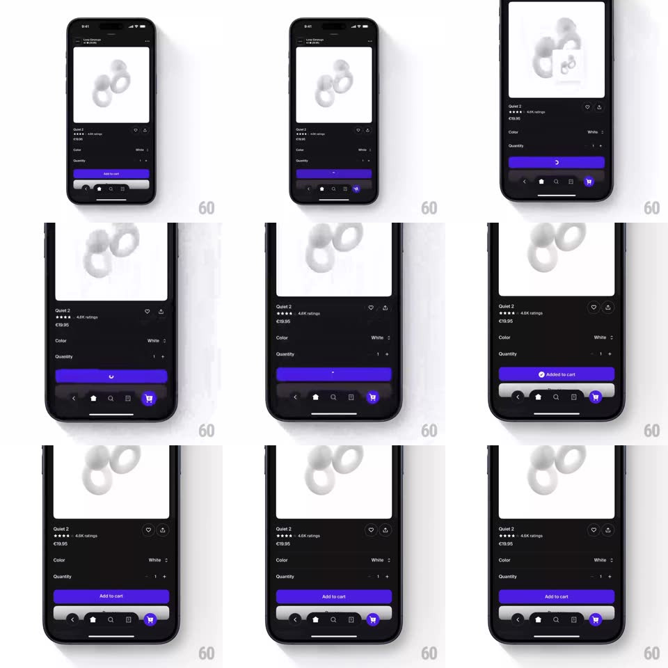

Media
Frame-by-frame

Rebuild this interaction 1:1: Shop's add-to-cart - tapping the purple "Add to cart" button flips it to a loading spinner, and on success the cart tab icon bounces springy with its badge incrementing while the button returns ready.

Rebuild this interaction 1:1: Shop's add-to-cart - tapping the purple "Add to cart" button flips it to a loading spinner, and on success the cart tab icon bounces springy with its badge incrementing while the button returns ready. ## Integration Integration: stack-agnostic spec - springs given as stiffness/damping, timed motions as duration + curve; map every value to your framework and animation library of choice. ## Scene Dark product page (Loop Earplugs "Quiet 2", rating stars, price, Color and Quantity rows) with a purple "Add to cart" button pinned above a dark tab bar; the cart tab icon sits bottom-right with a small count badge. ## Motion spec Pattern: button loading state with springy cart bounce. - Tap: the button's label crossfades to a small white spinner (150ms), the button's fill dimming ~15% - the tap is acknowledged instantly. - On success (~800ms later): the spinner swaps to a check that holds 400ms, then back to "Add to cart" (250ms crossfade). - Simultaneously the cart tab icon does the celebration: it hops (translateY 0 -> -8px -> 0, spring ~450/18) with a slight rotate (+-8deg), its badge scaling up 0 -> 1.3 -> 1 (spring ~420/16) showing the new count. - The icon settles with one small aftershock wobble (spring ~300/14, 200ms). ## Calibration - The icon bounce fires on success, not on tap - the reward follows the server. - The badge count is a real increment, digit rolling if count < 10. ## Reduced motion Button crossfades states; badge appears without bounce. ## Don't miss - The spinner replaces the label INSIDE the same button - no layout shift, no modal. - The bounce is small (8px) and fast (under 600ms total) - punctuation, not parade.